“O enlace está garantido.”
Terra à vista quer dizer visada para o centro dela. Faltam estação, antena, apontamento, frequência e orçamento do enlace.
Aprenda a comparar locais, reconhecer o que o relevo esconde e acompanhar uma missão educativa da Terra à Lua e de volta.
Na primeira vez que você abre o explorador, um guia rápido de nove passos aponta cada controle e explica o que ele faz. Ele não volta sozinho: para rever, use Guia na barra do topo.
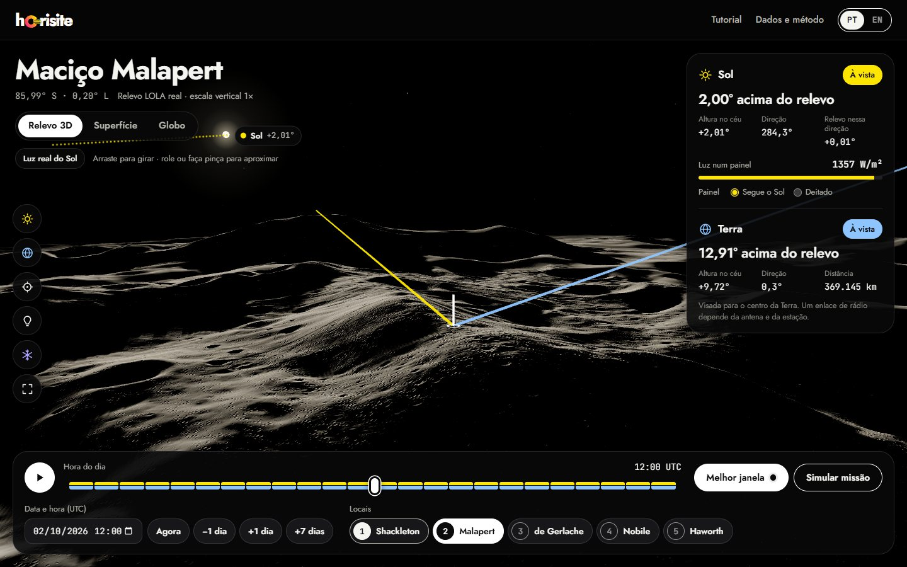
Relevo 3D mostra a região com os raios até o Sol e a Terra; Superfície põe você no lugar do observador; Globo situa os locais na Lua. Arraste para girar.
Os botões do Sol e da Terra olham para eles com uma lente: a Terra aparece com a fase real do instante. A lâmpada liga uma luz de leitura (não física) e o cristal mostra a sombra eterna.
Compare a posição do astro com o relevo naquela direção, e não só com o plano horizontal.
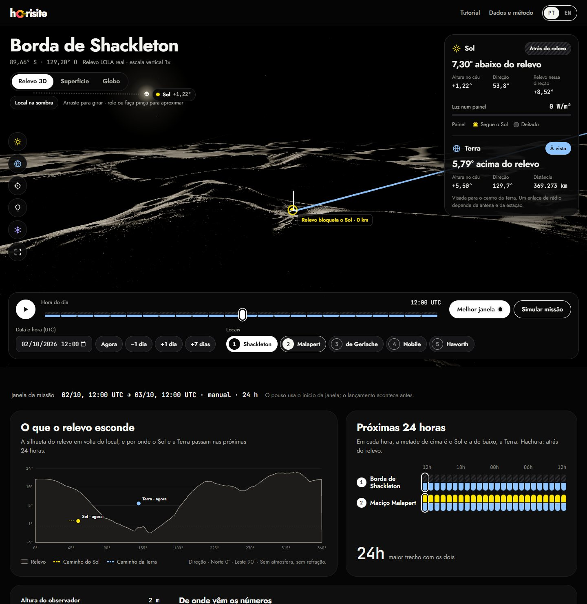
A cena mostra a luz real do Sol. Ver o solo iluminado pela luz de leitura não prova que ele recebe Sol; para isso, use os números do quadro.
Repita os parâmetros do passo 01 e toque alternadamente nos nomes dos dois locais. Os números abaixo são arredondados a partir do próprio app.
| Resultado | Malapert | Shackleton |
|---|---|---|
| Sol | 2,00° acima do relevo | 7,30° abaixo do relevo |
| Terra | 12,91° acima do relevo | 5,79° acima do relevo |
| Luz num painel | ≈ 1.357 W/m² | 0 W/m² |
| Sol e Terra neste instante | Atende no modelo | Não atende: falta Sol direto |
O que dá para concluir: Malapert tem luz e visada ao mesmo tempo nesse instante do modelo. O que não dá: que os painéis vão alimentar a missão ou que o rádio vai funcionar. W/m² mede luz por área, não potência elétrica.
Na barra do tempo, cada local comparado tem uma trilha com as 24 horas do dia escolhido (UTC): em cima, amarelo é o Sol à vista; embaixo, rosa é a Terra à vista; hachura é atrás do relevo. O cursor do tempo cruza todas as trilhas, o número à esquerda leva a explorar aquele local e o valor à direita é o maior trecho do dia com Sol e Terra juntos. Na cena, os outros locais comparados aparecem com um rótulo de nome e distância; quando ficam fora do quadro, o rótulo encosta na borda e uma seta aponta a direção.
A coluna “Sol+Terra” mostra, para cada local separadamente, o maior trecho do dia com os dois. A janela comum da comparação aparece no cartão ao lado de Melhor janela (horas seguidas e datas) e é recalculada sozinha quando você muda os locais ou a altura do observador.
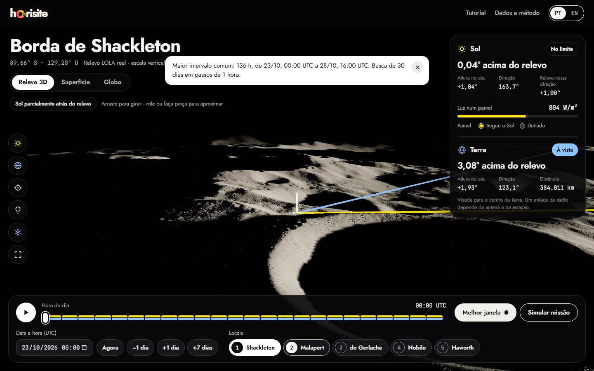
Volte a 02/10/2026 às 12:00 UTC, explore Shackleton e use o + em Malapert e Haworth. O cartão da janela avisa que não há hora com Sol e Terra juntos nos três nesses 30 dias.
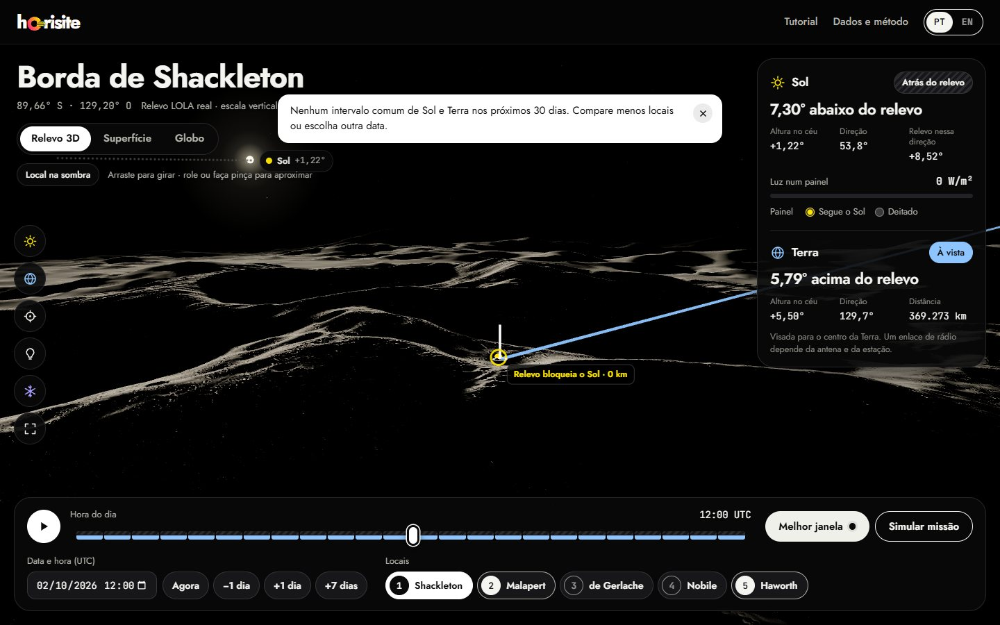
Como continuar: compare menos locais ou outra data e calcule de novo. Sem janela calculada, a simulação usa uma janela manual a partir da data escolhida, que não é otimizada nem favorável.
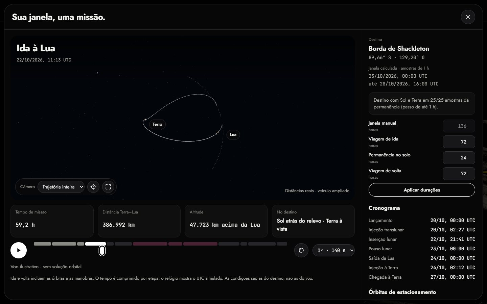
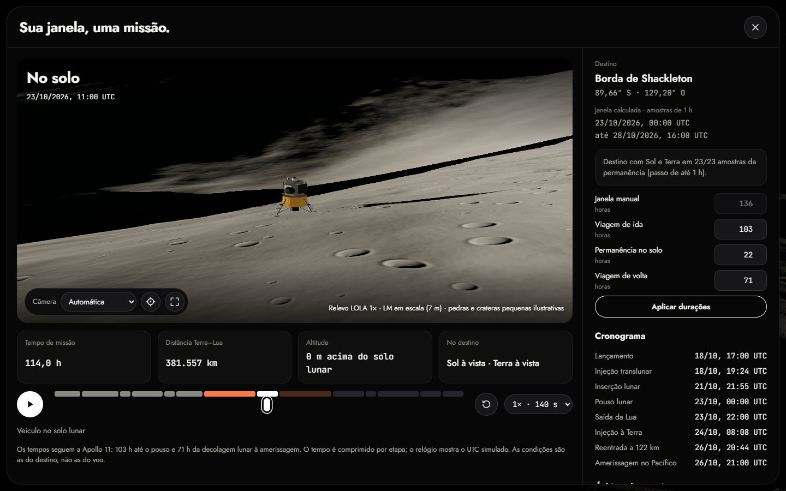
A missão segue o perfil das Apollo que pousaram na Lua. O Saturn V sai do Kennedy e solta os estágios no caminho; a nave dá 1,5 volta numa órbita de 185 km (cerca de 88 min por volta) e segue para a Lua. A nave-mãe e o módulo lunar dão 13 voltas a 110 km (cerca de 119 min); o módulo desce e pousa. Na decolagem, só o estágio de subida volta à órbita, e a base fica no solo. Depois de 5 voltas, a nave-mãe volta para a Terra; só a cápsula reentra, abre os paraquedas e amerissa no Pacífico, de dia, como os resgates eram planejados. Na câmera Automática, a missão começa na plataforma 39A, com o Saturn V em tamanho real, e segue ao lado da nave em escala real, com a Terra ou a Lua ao fundo; no meio das viagens ela mostra a trajetória inteira. O módulo lunar e a nave-mãe são os modelos 3D oficiais da NASA. Na chegada à Lua a cena vai direto ao ponto de descida e, na saída, mostra uma volta; o relógio e o contador correm as 13 e as 5 voltas da Apollo 11. A reprodução completa dura 154 s em 1×; descida e subida têm 20 s cada, perto do solo.
| Tentativa | Por que não funciona | Como corrigir |
|---|---|---|
| Comparar quatro locais | A comparação aceita até 3 pontos, contando o explorado. | Tire um com o ✓ antes de incluir outro. |
| Data em 1999 ou 2051 | A faixa do app é 2000–2050. | Use uma data válida; o cronograma da missão também precisa caber nela. |
| Ficar 137 h numa janela de 136 h | A permanência passa da janela. | Use no máximo 136 h; as condições ainda precisam ser avaliadas. |
| Ficar 48 h numa janela manual de 24 h | A permanência passa do intervalo manual. | Ajuste a janela ou a permanência; janela maior não garante luz e visada. |
| Ida ou volta de 12 h | O app aceita 24–240 h por trecho. | Use um valor permitido; essa faixa é do app, não um limite físico. |
Terra à vista quer dizer visada para o centro dela. Faltam estação, antena, apontamento, frequência e orçamento do enlace.
A luz num painel não inclui área, eficiência, temperatura, consumo nem baterias.
Só as órbitas de estacionamento usam a solução circular de dois corpos. Transferências e queimas são ilustrativas; não há delta-v nem combustível. Janela de luz não é janela orbital.
O relevo tem pontos a cada ~40 m perto do observador e ~130 m no resto do recorte; não mostra pedras nem o contato das pernas. Os pontos são referências regionais, não locais certificados.
Leia o aviso da página. Se o WebGL não iniciar, os cálculos e os gráficos continuam disponíveis. Ligue a aceleração gráfica do navegador ou experimente outro navegador.
O relevo real de cada local tem alguns megabytes. O primeiro local abre antes; os outros carregam em seguida. Em conexões lentas, espere o aviso de carregamento sumir.
Confira data e hora UTC, locais marcados, nome em exploração, altura e opção do painel. O app lembra a sua seleção neste navegador; abrir a página não restaura os parâmetros deste guia. Mudou a comparação? Busque a janela de novo.
Para os dados e as aproximações, abra Dados e método no app ou O que é real e o que é ilustrativo na missão. As imagens deste guia são capturas reais do app com os parâmetros indicados.
Horisite · tutorial educativo · exemplos conferidos no próprio modelo.
Relevo NASA GSFC PGDA · LRO/LOLA (Barker et al. 2023) · efemérides Astronomy Engine · 3D Three.js.
Learn to compare sites, see what the relief hides and follow an educational mission from Earth to the Moon and back.
The first time you open the explorer, a nine-step quick guide points at each control and explains what it does. It does not come back by itself: to see it again, use Guide in the top bar.
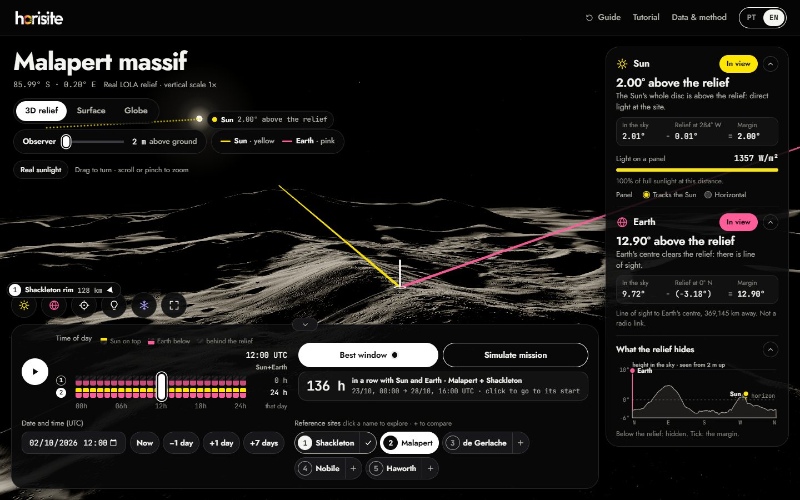
3D relief shows the region with rays to the Sun and Earth; Surface puts you in the observer’s place; Globe places the sites on the Moon. Drag to turn.
The Sun and Earth buttons look at them through a lens: Earth appears with its real phase at that moment. The lamp turns on a reading light (not physical) and the crystal shows permanent shadow.
Compare the body’s position with the relief in that direction, not only with the horizontal plane.
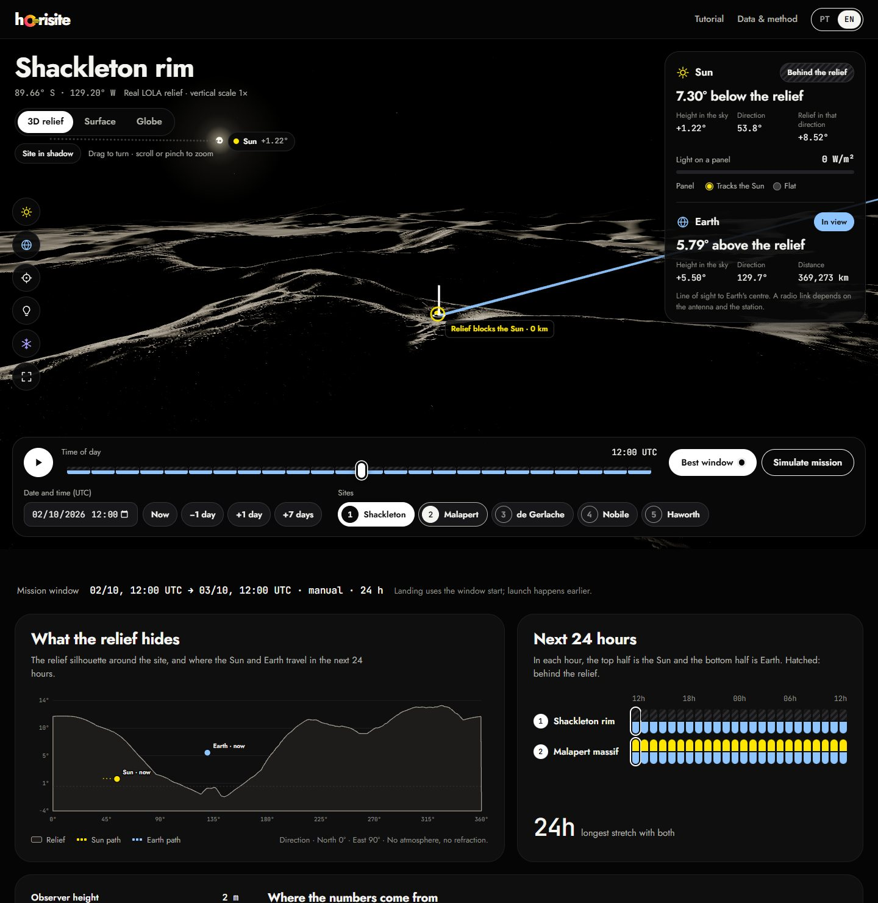
The scene shows real sunlight. Seeing ground lit by the reading light does not prove it receives sunlight; use the numbers in the box for that.
Repeat the settings of step 01 and tap the two site names in turn. The figures below are rounded from the app itself.
| Result | Malapert | Shackleton |
|---|---|---|
| Sun | 2.00° above the relief | 7.30° below the relief |
| Earth | 12.91° above the relief | 5.79° above the relief |
| Light on a panel | ≈ 1,357 W/m² | 0 W/m² |
| Sun and Earth at this moment | Meets it in the model | Fails: no direct sunlight |
What you can conclude: Malapert has light and line of sight at the same moment in the model. What you cannot: that panels will power the mission or that the radio will work. W/m² measures light per area, not electrical power.
In the time bar, every compared site has a track with the 24 hours of the chosen day (UTC): on top, yellow is the Sun in view; below, pink is Earth in view; hatching means behind the relief. The time cursor crosses all tracks, the number on the left explores that site and the value on the right is the longest stretch of the day with Sun and Earth together. In the scene, the other compared sites carry a label with name and distance; when they fall outside the picture the label sticks to the edge and an arrow points the way.
The “Sun+Earth” column shows, for each site separately, the longest stretch of the day with both. The common window of the comparison sits in the card next to Best window (hours in a row and dates) and is recalculated by itself when you change the sites or the observer height.
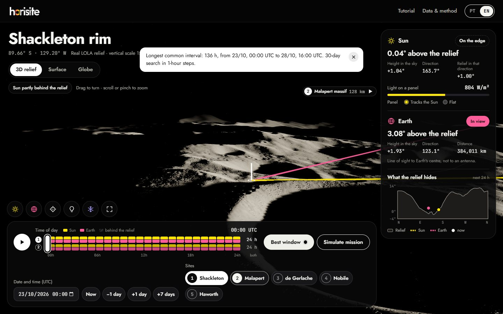
Go back to 2 October 2026 at 12:00 UTC, explore Shackleton and use the + on Malapert and Haworth. The window card says there is no hour with Sun and Earth together at all three in those 30 days.
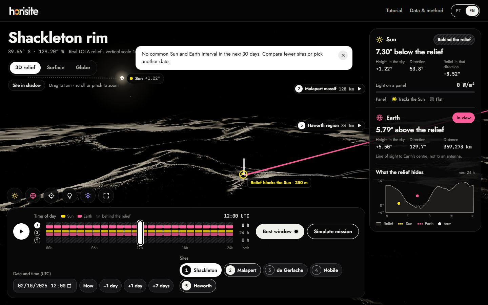
Next step: compare fewer sites or another date and calculate again. Without a calculated window, the simulation uses a manual window from the chosen date, which is neither optimised nor favourable.
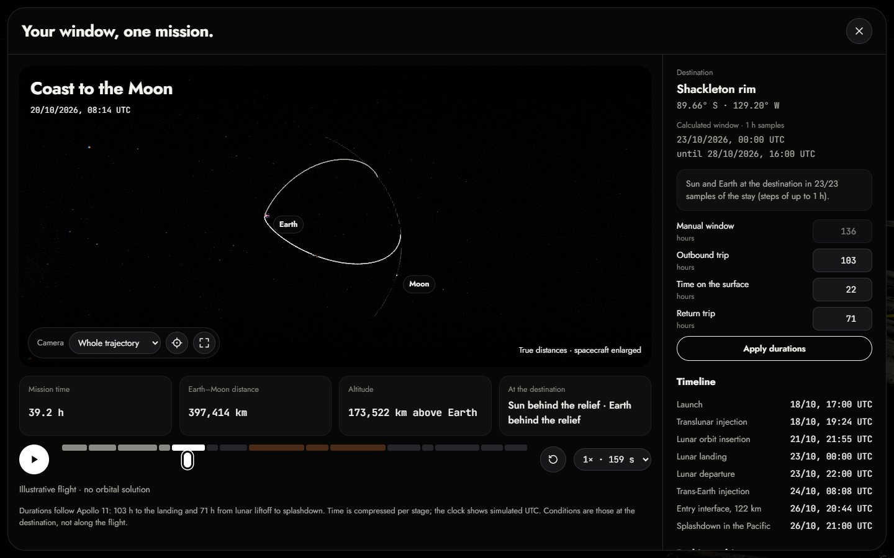
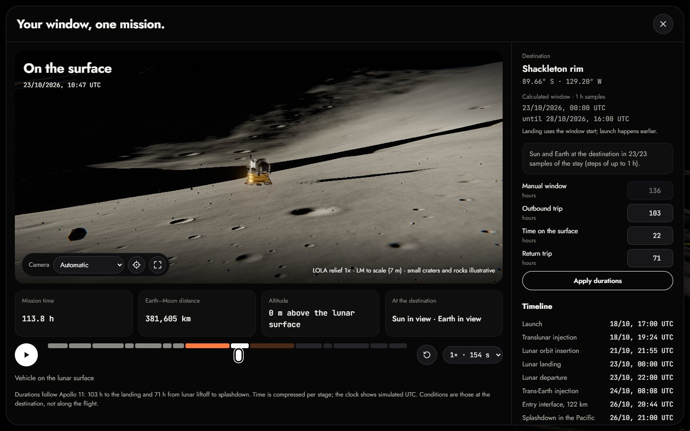
The mission follows the profile of the Apollo flights that landed on the Moon. The Saturn V leaves Kennedy and drops its stages on the way; the spacecraft makes 1.5 orbits at 185 km (about 88 min each) and heads for the Moon. The command ship and the lunar module make 13 orbits at 110 km (about 119 min); the module descends and lands. At liftoff only the ascent stage returns to orbit and the descent stage stays on the ground. After 5 orbits the command ship heads home; only the capsule re-enters, opens its parachutes and splashes down in the Pacific in daylight, as recoveries were planned. With the Automatic camera the mission starts on pad 39A, with the Saturn V at true size, and then flies beside the spacecraft at true scale, with the Earth or the Moon behind; in the middle of the coasts it shows the whole trajectory. The lunar module and the command ship are the official NASA 3D models. On arrival at the Moon the scene goes straight to the descent point and on the way out it shows one lap; the clock and the counter run through Apollo 11's 13 and 5. The full playback lasts 154 s at 1×; descent and ascent take 20 s each, close to the ground.
| Attempt | Why it fails | How to fix it |
|---|---|---|
| Comparing four sites | The comparison takes up to 3 points, counting the explored one. | Remove one with the ✓ before adding another. |
| A date in 1999 or 2051 | The app covers 2000–2050. | Use a valid date; the mission timeline must fit in it too. |
| Staying 137 h in a 136 h window | The stay goes past the window. | Use at most 136 h; conditions still need checking. |
| Staying 48 h in a 24 h manual window | The stay goes past the manual interval. | Adjust the window or the stay; a longer window does not guarantee light and sight. |
| A 12 h trip out or back | The app accepts 24–240 h per leg. | Use an allowed value; this range belongs to the app, not to physics. |
Earth in view means line of sight to its centre. Station, antenna, pointing, frequency and link budget are missing.
Light on a panel leaves out area, efficiency, temperature, consumption and batteries.
Only the parking orbits use the two-body circular solution. Transfers and burns are illustrative; there is no delta-v or fuel. A light window is not an orbital window.
The relief has points every ~40 m near the observer and ~130 m elsewhere in the tile; it shows neither boulders nor leg contact. The points are regional references, not certified sites.
Read the notice on the page. If WebGL cannot start, the calculations and charts stay available. Turn on hardware acceleration or try another browser.
Each site’s real relief is a few megabytes. The first site opens first; the others load after it. On slow connections, wait for the loading notice to go away.
Check the UTC date and time, ticked sites, explored site, height and panel option. The app remembers your selection in this browser; opening the page does not restore this guide’s settings. Changed the comparison? Search for the window again.
For the data and approximations, open Data & method in the app or What is real and what is illustrative in the mission. The images in this guide are real captures of the app with the settings shown.
Horisite · educational tutorial · examples checked against the model itself.
Relief NASA GSFC PGDA · LRO/LOLA (Barker et al. 2023) · ephemerides Astronomy Engine · 3D Three.js.